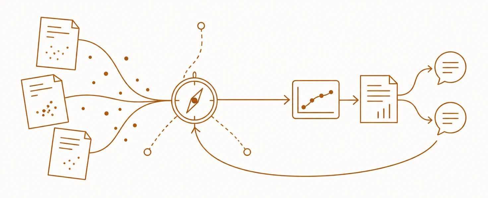
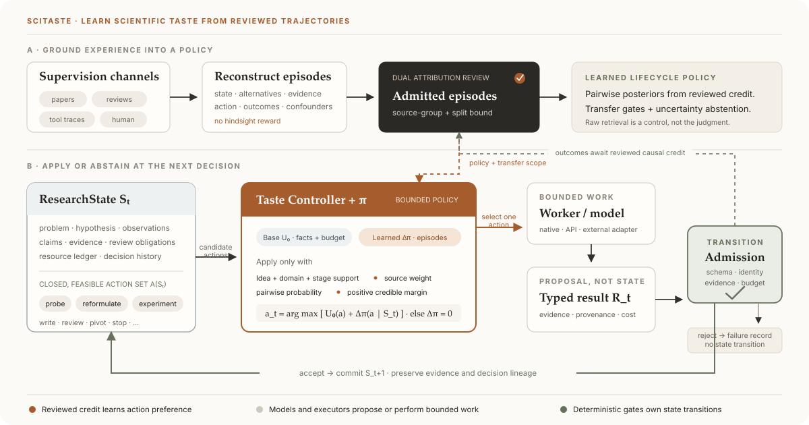

Scientific Taste
Decision intelligence for selecting, revising, pivoting, or stopping research.
Read the concept →
Open-source research system · Research preview
SciTaste turns scientific taste into explicit research decisions: what to do next, why it is worth doing, what evidence could change course, and when to stop.
Scientific Taste
High-quality papers, reviews, revisions, and outcomes are not treated as passages to imitate. SciTaste separates factual knowledge from decision precedent, then uses verified Taste Cases to judge candidate actions against evidence, uncertainty, scientific value, and remaining budget.

Decision intelligence for selecting, revising, pivoting, or stopping research.
Read the concept →Evidence-bound interfaces generated around the question, project, and current state.
Explore the interface →Bounded model nodes make rigid tools adaptive without inheriting execution authority.
Inspect the boundary →One nonlinear research state
Landscape, hypothesis, diagnostic probe, reformulation, and idea portfolio.
Claim graphs, gap planning, controlled experiments, contradiction, and pivot.
Evidence-bound narrative, venue taste, figures, TeX, PDF, and artifact lineage.
Structured concerns become revision or new-evidence obligations—not cosmetic edits.
Review, negative results, and stable contradictions can route the project back to evidence collection or hypothesis reformulation while preserving the full trajectory.
Generation as Content
Every project has a stable home. Every topic owns a conversation. Every question produces an immutable, deep-linked evidence surface assembled from a closed component registry. The model may propose a layout; it cannot invent project state or execute a tool.
Quick start
No API key, model download, or external research framework is required.
git clone https://github.com/Dustzx/SciTaste.git
cd SciTaste
python3.12 -m venv .venv
.venv/bin/pip install \
-c requirements/python312-dev-study.lock \
-e '.[dev,study]'
# Run a deterministic trajectory and its checks
.venv/bin/scitaste run demo --output outputs/demo --seed 7
.venv/bin/pytest
# Open the credential-free local project workspace
.venv/bin/scitaste ui serve --outputs-root outputsArchitecture
SciTaste owns the state, candidate actions, ranking, transition, and project lineage. Executors return bounded observations; model nodes return typed proposals.
Persistent claims, evidence, uncertainty, budget, and revision identity.
Ranks only feasible candidate actions and records rejected alternatives.
Runs admitted work in project-owned, content-bound boundaries.
Knowledge documents and Taste Cases keep different schemas and gates.
Claims resolve to evidence before paper, figure, or reviewer closure.
External systems—including AutoResearchClaw—remain replaceable baselines.
Targeting ICLR 2027
The implementation and venue-format pipeline are substantial. The title-level effectiveness claim is not yet established: formal matched-system experiments, verified native evidence lineage, and independent expert review remain pending.
Start offline, inspect the trajectory, then opt into only the models and resources you approve.